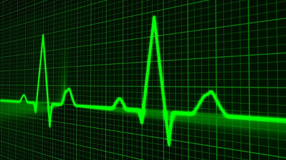

Currently scientists study our feelings and emotions accurately. We accept practically 100% of our decisions based on own emotions. Emotions studied by various science, starting from psychology and finishing to molecular biology. In present there is no complete model that can predict all possible changes of emotional state of human. Set of data about human body to make this model is open question too. We are convinced that this model will appear in the future. We will try to make our contribution to creature of such model.
There are many methods of determination of our emotions. They begins with subjective feelings of probationer and ends with analysis of human-inside chemical reactions. Easiest way to collect statistics about human emotions is using of non-invasive methods, like detection of emotions based on facial expression, voice or shape of pulse wave.
In our work we using plethysmographic method to get the shape of pulse wave and then analyzing it. Our diagnostic system realize principles of emotion detection based on analysis of distance between peaks in the pulse wave. Moreover, in present time we develop the experiments to identify new patterns and improve the current emotions model.